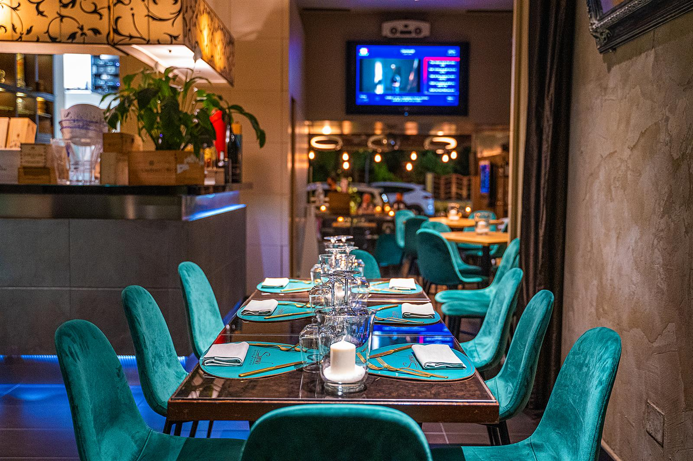
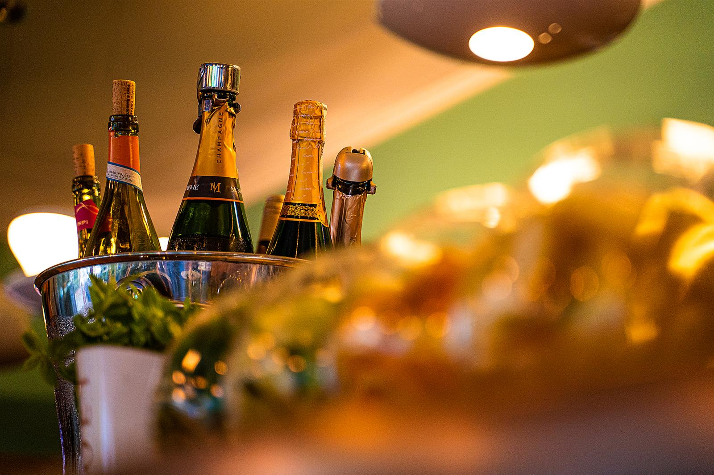
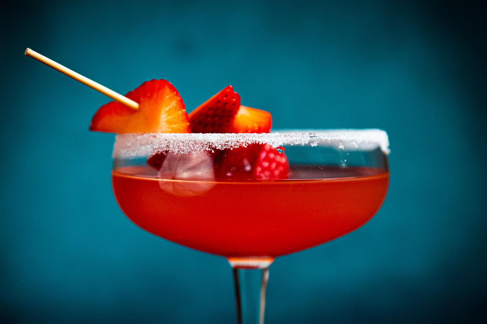
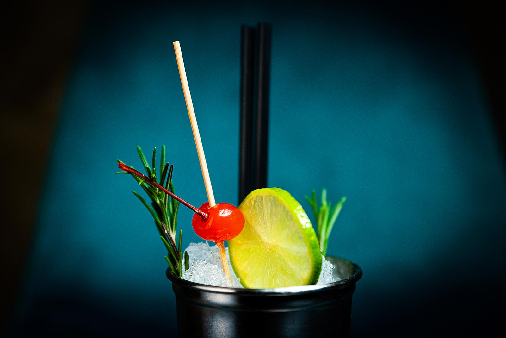
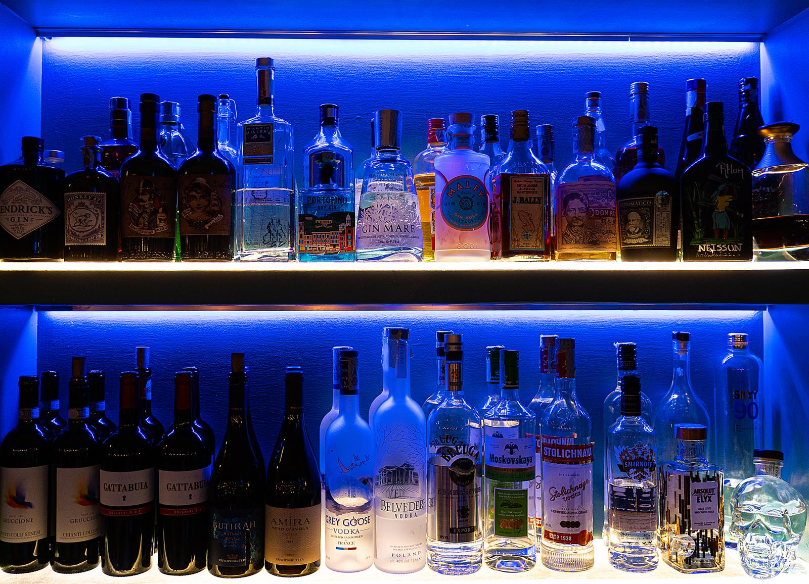
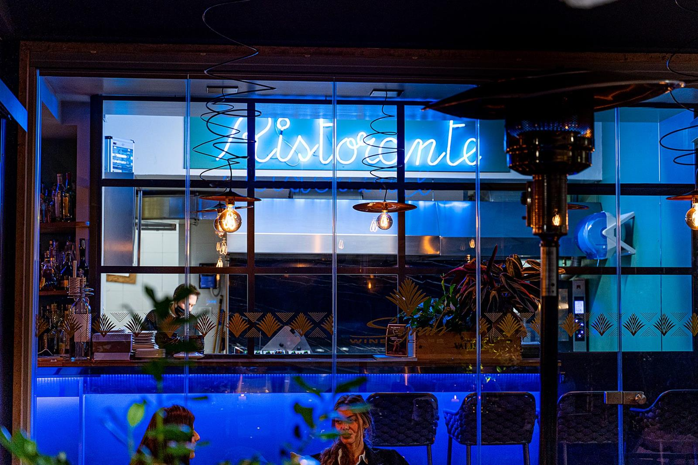
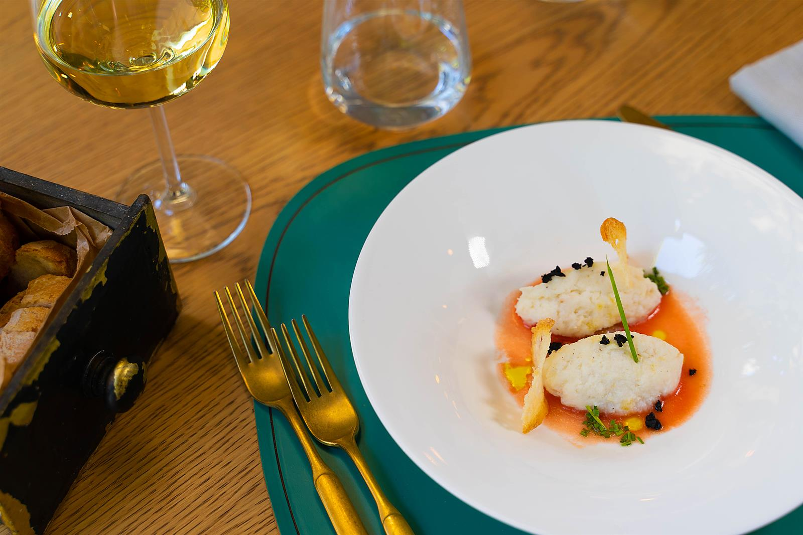

Ristorante con un menù che cambia con le stagioni, cocktail bar e una cantina di bottiglie da bere qui o portare a casa.

Syrah ha aperto il 5 ottobre 2003 come wine café, un posto dove bere bene. Con gli anni è diventato anche ristorante, cocktail bar e cantina: lo stesso indirizzo per l'aperitivo, la cena e l'ultimo bicchiere della sera.
«Team al top, attento e premuroso. Ottimo pranzo, grazie.»
Secco o dolce, amaro o fruttato: dai grandi classici alle miscele di oggi, preparati al bancone sotto la luce blu.



Dalle etichette più rinomate alle piccole cantine più promettenti. Si beve qui, al calice o in bottiglia, oppure si porta a casa.
Dalle 18, con stuzzichini e specialità toscane da accompagnare al bicchiere.
Aperitivo, buffet, sfilate e DJ set all'aperto.
Le date le annunciamo su Instagram: seguici per non perderle.

